Bimanual manipulation is imperative yet challenging for robots to execute complex tasks, requiring coordinated collaboration between two arms. However, existing methods for bimanual manipulation often rely on costly data collection and training, struggling to generalize to unseen objects in novel categories efficiently. In this paper, we present Bi-Adapt, a novel framework designed for efficient generalization for bimanual manipulation via semantic correspondence. Bi-Adapt achieves cross-category affordance mapping by leveraging the strong capability of vision foundation models. Fine-tuning with restricted data on novel categories, Bi-Adapt exhibits notable generalization to out-of-category objects in a zero-shot manner. Extensive experiments conducted in both simulation and real-world environments validate the effectiveness of our approach and demonstrate its high efficiency, achieving a high success rate on different benchmark tasks across novel categories with limited data.
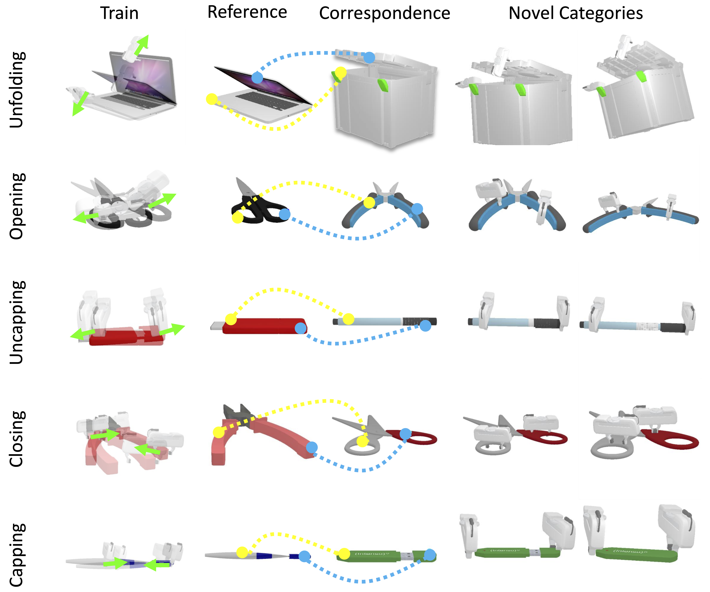
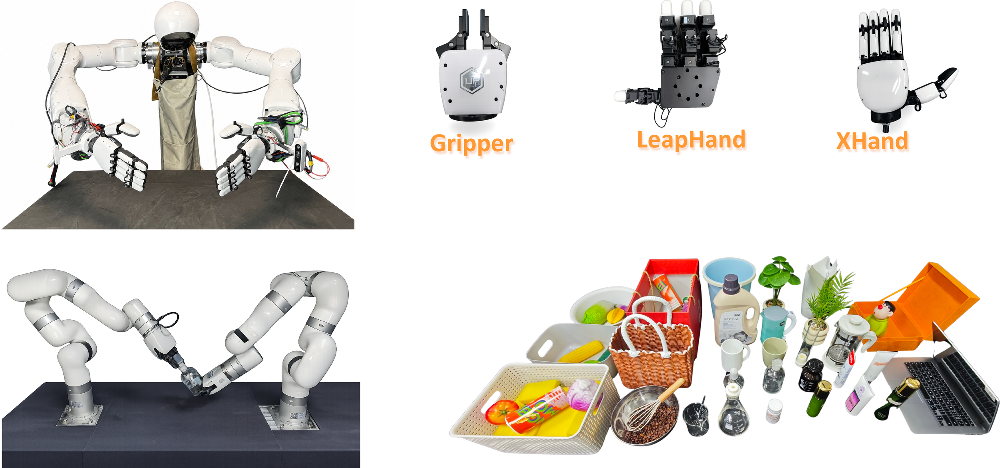
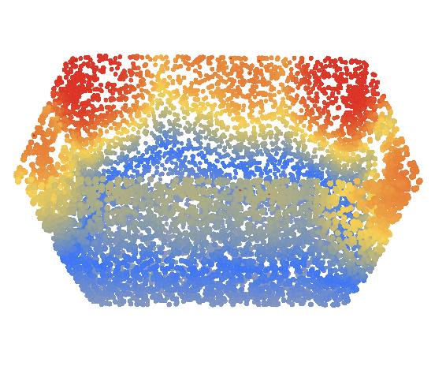
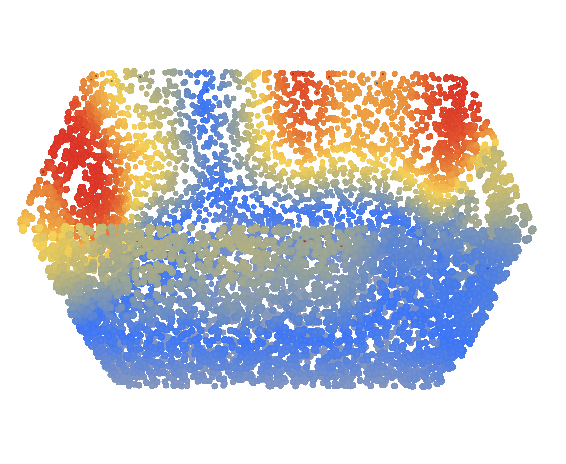
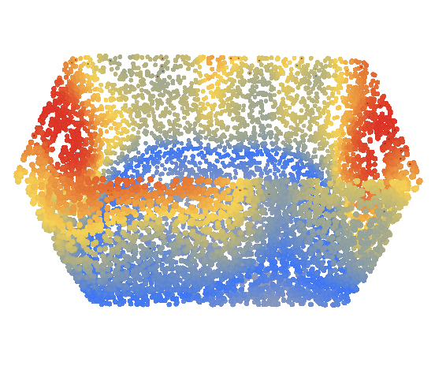
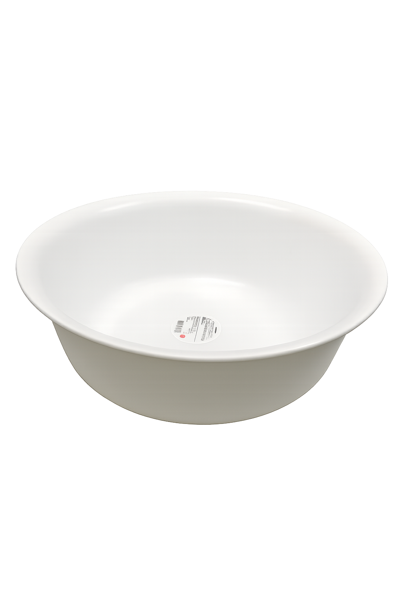
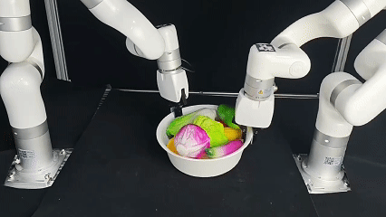
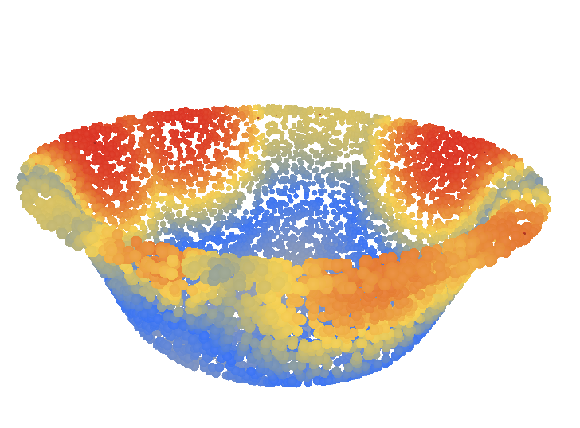
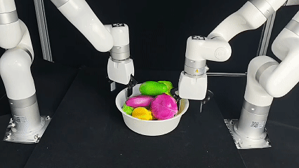
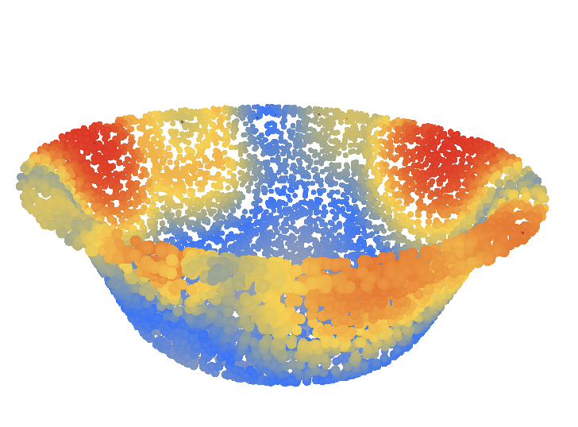
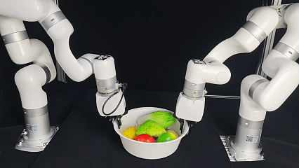
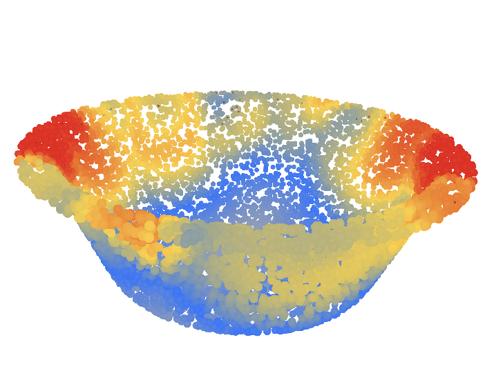
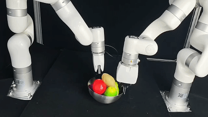
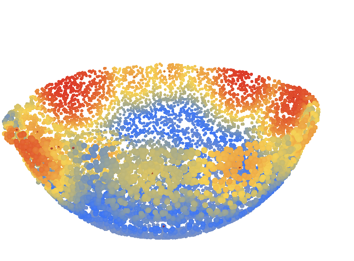
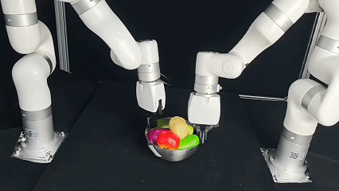
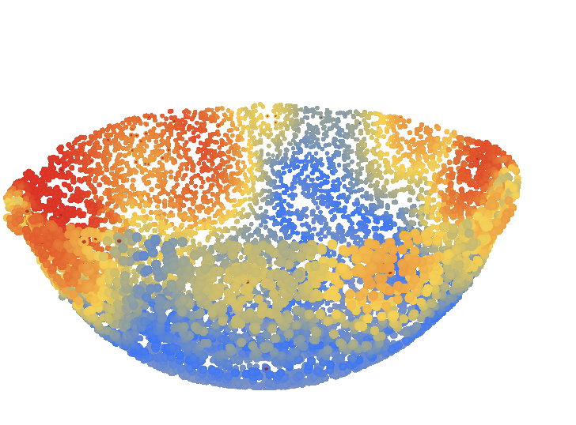
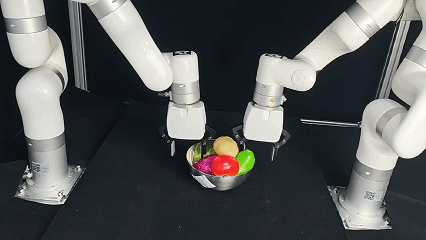
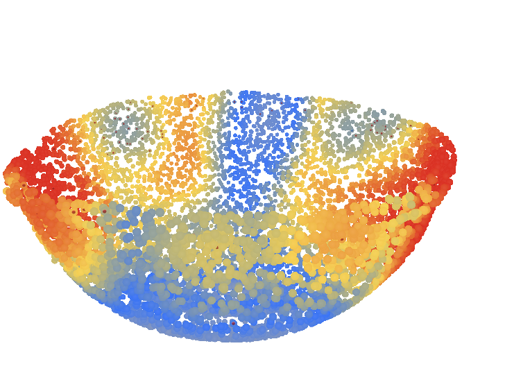
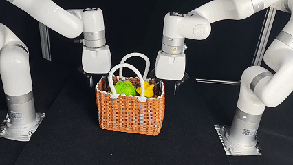
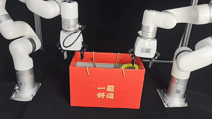
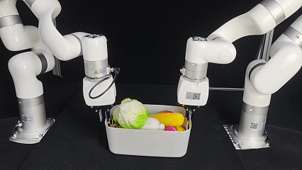
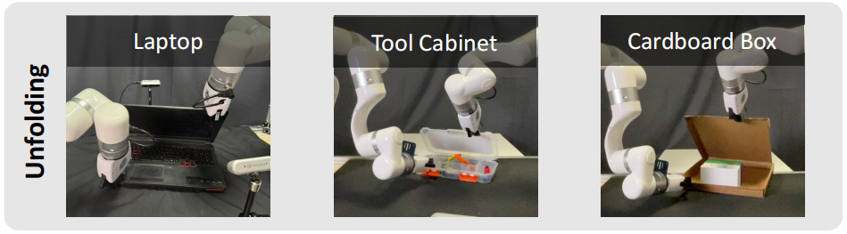
BibTex Code Here